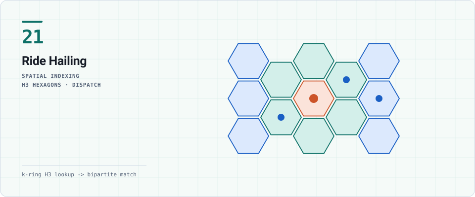
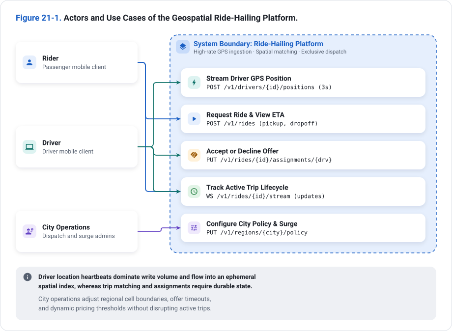

Chapter 21: Ride Hailing: System Design

A ride-hailing platform matches moving passengers with nearby idle drivers under two opposing data-management constraints. Driver coordinates arrive continuously at hundreds of thousands to millions of updates per second, yet every coordinate becomes obsolete within three to four seconds and requires zero disk durability for live matching. Trip lifecycles, by contrast, carry binding financial and physical invariants: a ride must be assigned to at most one driver, a driver must hold at most one active ride, and every state transition must survive process crashes. In this chapter, I design a geographically partitioned architecture that splits ephemeral in-memory spatial indexing from strongly consistent trip state management, combining H3/S2 spatial indexing, road-network ETA ranking, exclusive dispatch offer locks, and cell-level surge aggregation.
In this chapter, we cover
- actors, use cases, verifiable functional requirements, split-consistency SLOs, explicit non-goals, and GPS ingestion capacity bounds
- HTTP/2 and WebSocket APIs for GPS heartbeats, idempotent ride requests, exclusive driver acceptance, and live trip tracking, alongside relational trip DDL
- control-plane vs. data-plane separation across region partitioning, cell-sharded RAM indexes, road-graph ETA engines, and Raft-backed trip stores
- H3 hexagonal and S2 Hilbert-curve spatial indexing compared with geohash boundary distortion, plus TTL-leased driver heartbeat ingestion
- adaptive k-ring cell expansion, Contraction Hierarchies ETA ranking, serialized 15-second exclusive offer locks, and H3 cell-level surge pricing aggregation
- failure matrices, dispatch SLIs/SLOs, production architectures (Uber H3/DISCO, Lyft, Google S2), and verification via
code/nearbysim
21.1 Requirements, Actors, and Capacity Bounds
One-dimensional B-tree indexes order records along a single key and cannot efficiently answer two-dimensional proximity queries: intersecting a latitude range scan with a longitude range scan examines thousands of irrelevant drivers across an entire city. To reduce candidate lookup time from O(N) across the entire fleet to O(K) local candidates, we project spherical coordinates onto discrete hierarchical spatial cells and pair that volatile read/write tier with a durable state machine for trip assignments.
Actors and Use Cases
Three external actor classes interact across the boundary of the ride-hailing platform, as illustrated in Figure 21-1.

| Actor | Operation | Concrete Scenario |
|---|---|---|
| Driver Client | Stream GPS heartbeats (POST /v1/drivers/{id}/positions or persistent binary stream) and accept/decline offers (PUT /v1/rides/{id}/assignments/{drv}) | Broadcast (lat, lon, heading, speed) every 3 to 4 seconds while online and accept a 15-second dispatch offer |
| Rider Client | Request ride (POST /v1/rides) and follow approaching vehicle (WS /v1/rides/{id}/stream) | Submit pickup and dropoff coordinates with an Idempotency-Key, view ETA, and watch live vehicle telemetry |
| City Operations | Configure regional dispatch policy and surge caps (PUT /v1/regions/{city}/policies) | Adjust ring search radius, offer TTL, and dynamic pricing thresholds during concerts, storms, or airport surges |
Functional Requirements
| No. | Functional Requirement |
|---|---|
| 0 | Online drivers transmit GPS coordinates every 3 to 4 seconds; drivers who cease reporting automatically vanish from active matching within 15 seconds. |
| 1 | A rider can request a ride specifying pickup and dropoff coordinates with a caller-supplied Idempotency-Key so retries never summon two vehicles. |
| 2 | The platform discovers nearby available drivers via spatial cell indexing, ranks candidates by road-network Estimated Time of Arrival (ETA), and offers the ride sequentially. |
| 3 | Each ride is assigned to at most one driver, and each driver is concurrently offered or assigned to at most one ride. |
| 4 | Once assigned, the rider receives real-time location updates of the approaching driver and durable state transitions across the trip lifecycle (REQUESTED -> OFFERED -> ACCEPTED -> ARRIVING -> IN_PROGRESS -> COMPLETED). |
| 5 | The system continuously aggregates real-time rider demand and idle driver supply per spatial cell to compute dynamic surge pricing multipliers. |
Non-Functional Requirements and SLOs
| No. | Property | Target Specification | Architectural Consequence |
|---|---|---|---|
| 0 | Spatial Lookup Latency | Nearby candidate discovery + ETA ranking p99 <= 100 ms; full end-to-end match initiation <= 250 ms | Lock-free or fine-grained sharded in-memory spatial index co-located with precomputed Contraction Hierarchies road graphs |
| 1 | Split Consistency | Eventual consistency (<= 4 s staleness) for live driver coordinates; strict ACID Linearizability for trip state and driver assignment | Dual storage architecture: volatile RAM spatial index for heartbeats (AP), 3-AZ Raft-replicated relational/KV store for trips (CP) |
| 2 | Availability | 99.95% ride request availability per metro region (<= 21.6 minutes/month) | Independent regional deployments (a failure in London never impacts Tokyo); volatile location index rebuilds automatically in 4 seconds |
| 3 | Split Durability | Zero durability required for live driver matching index; zero RPO (0 lost trips) for ride states and billing GPS bread-crumb logs | Live coordinates remain in RAM without fsync; active-trip route points stream asynchronously to a durable Kafka/object-store billing log |
| 4 | Scale | 500,000 active drivers (125,000 to 167,000 GPS writes/s globally; up to 1,000,000+ writes/s at global peak) and 1,000 ride requests/s peak per large region | Consistent-hash cell sharding across in-memory location nodes; binary gRPC/WebSocket framing to minimize connection overhead |
Non-Goals and Explicit Scope Boundaries
To keep our architectural focus on real-time spatial matching and dispatch exclusivity, we exclude the following concerns:
- Turn-by-turn navigation and map-tile rendering: Client map SDKs render vector tiles and compute voice navigation instructions independently of backend dispatch.
- Multi-passenger pooled carpooling optimization (Ride-Share Routing): Dynamic vehicle-routing with time windows (VRPTW) for shared trips extends the single-rider matching problem with combinatorial detour constraints.
- Driver background verification, payout disbursements, and tax reporting: Offline compliance workflows and settlement payouts build on the payment ledger architecture in Chapter 19.
- Offline map-data ingestion from OpenStreetMap or satellite imagery: Road-graph compilation runs in batch map-engineering pipelines outside the real-time dispatch plane.
Back-of-the-Envelope Capacity Bounds
In ride hailing, write throughput on driver heartbeats exceeds rider matching reads by more than two orders of magnitude, while the total memory footprint of all live driver positions fits comfortably in RAM.
| Resource Dimension | Derivation | Provisioned Bound |
|---|---|---|
| Sustained GPS Write Rate | 500,000 active drivers / 4 s interval (or / 3 s in dense metros) | 125,000 to 167,000 updates/s (~1M updates/s at global mega-scale) |
| In-Memory Driver State | 500,000 drivers * 128 B (driver_id, lat, lon, h3_cell, status, expires_at, heading) | ~64 MB raw state (~256 MB with hash-table and cell-set overhead) |
| GPS Ingress Bandwidth | 167,000 updates/s * 64 B compact protobuf/binary frame | ~10.7 MB/s (~86 Mbit/s) per mega-region |
| Spatial Search Candidate Fan-Out | Center cell + 1-ring (7 H3 hexagons or 9 S2 squares) * ~20 idle drivers/cell | ~140 to 180 candidate drivers filtered to top 10 to 20 for road-graph ETA |
| Daily Completed Trips | 1,000 peak req/s * 0.35 average utilization * 86,400 s | ~30,000,000 rides/day |
| Active Trip Route Telemetry | 150,000 concurrent in-trip cars * 1 point/4 s * 40 B * 86,400 s | ~130 GB/day compressed billing breadcrumb log in object storage |
21.2 External API and Data Contracts
Driver telemetry runs over persistent bidirectional HTTP/2 (gRPC) or WebSocket connections using compact binary payloads, while trip creation and offer acceptance expose explicit idempotent REST semantics.
Driver Location Heartbeat Contract
POST /v1/drivers/7056/positions HTTP/2
Host: rides.example
Authorization: Bearer drv_eyJhbGci...
Content-Type: application/json
{
"latitude": 38.7223,
"longitude": -9.1393,
"heading_deg": 270,
"speed_mps": 8.4,
"status": "AVAILABLE",
"client_ts_ms": 1760436004120
}
HTTP/2 204 No Content
In production mobile clients, the same logical payload serializes into a 48 to 64 byte Protocol Buffers message pushed over a long-lived TLS stream so cellular radios avoid repeated TCP/TLS handshakes.
Idempotent Ride Request Endpoint
POST /v1/rides HTTP/2
Host: rides.example
Authorization: Bearer rdr_eyJhbGci...
Idempotency-Key: 3f7a-ride-1
Content-Type: application/json
{
"pickup": { "latitude": 38.7169, "longitude": -9.1399 },
"dropoff": { "latitude": 38.7742, "longitude": -9.1342 },
"product_tier": "standard",
"quoted_surge_multiplier": 1.4
}
HTTP/2 201 Created
Location: /v1/rides/ride_501
Content-Type: application/json
{
"ride_id": "ride_501",
"state": "REQUESTED",
"pickup_h3_cell": "88392a4945fffff",
"estimated_pickup_sec": 240
}
Exclusive Driver Offer Acceptance Endpoint
PUT /v1/rides/ride_501/assignments/7056 HTTP/2
Host: rides.example
Authorization: Bearer drv_eyJhbGci...
Content-Type: application/json
{
"offer_id": "off_9912",
"offer_version": 3
}
HTTP/2 200 OK
Content-Type: application/json
{
"ride_id": "ride_501",
"driver_id": "7056",
"state": "ACCEPTED",
"version": 4
}
Using PUT on a driver-scoped assignment URI makes retries by the accepted driver naturally idempotent. If the 15-second offer lease has expired or another driver has already accepted, the endpoint returns 409 Conflict.
Active Trip Telemetry Stream
Once state = 'ACCEPTED', the rider client opens GET /v1/rides/ride_501/stream (Upgrade: websocket). The Location Gateway fans out the assigned driver’s GPS heartbeats directly onto the rider’s socket (using the session routing model from Chapter 18) until the trip reaches COMPLETED or CANCELLED.
Durable Trip Store Schema
The volatile spatial index holds only RAM structs, whereas the strongly consistent Trip Store persists every trip state transition and active offer lease:
CREATE TABLE rides (
ride_id TEXT PRIMARY KEY,
city_id TEXT NOT NULL,
rider_id TEXT NOT NULL,
idem_key TEXT NOT NULL,
driver_id TEXT,
pickup_lat DOUBLE PRECISION NOT NULL,
pickup_lon DOUBLE PRECISION NOT NULL,
pickup_h3_cell BIGINT NOT NULL,
dropoff_lat DOUBLE PRECISION NOT NULL,
dropoff_lon DOUBLE PRECISION NOT NULL,
surge_multiplier NUMERIC(4,2) NOT NULL DEFAULT 1.00,
state TEXT NOT NULL CHECK (state IN (
'REQUESTED', 'OFFERED', 'ACCEPTED', 'ARRIVING',
'IN_PROGRESS', 'COMPLETED', 'CANCELLED', 'NO_DRIVER'
)),
active_offer_id TEXT,
offer_expires_at TIMESTAMPTZ,
version BIGINT NOT NULL DEFAULT 1,
created_at TIMESTAMPTZ NOT NULL DEFAULT now(),
UNIQUE (rider_id, idem_key)
);
CREATE TABLE driver_active_locks (
driver_id TEXT PRIMARY KEY,
ride_id TEXT NOT NULL UNIQUE REFERENCES rides(ride_id),
lock_type TEXT NOT NULL CHECK (lock_type IN ('OFFER', 'TRIP')),
expires_at TIMESTAMPTZ -- NULL once transitioned to active TRIP
);
21.3 High-Level Architecture: Control Plane vs. Data Plane
Because rides never cross geographic continents, we deploy independent regional cells per metropolitan area (or metro cluster) and separate operational policy management from real-time telemetry ingestion and dispatch, as shown in Figure 21-2.

Control Plane Responsibilities
- Cell Partition Map: Assigns coarse parent H3/S2 spatial regions to specific shards of the Cell-Sharded Spatial Index using consistent hashing (Chapter 1) with dynamic splitting in high-density urban cores.
- Dispatch Policy Store: Publishes per-city parameters (default H3 search resolution, maximum k-ring escalation depth, 15-second offer TTL, and batch-matching window duration) to stateless Dispatch Engine nodes.
- Surge and Supply Monitor: Consumes cell-level counts of
AVAILABLEdrivers and incomingREQUESTEDrides over sliding 60-second windows, publishing smoothed surge multipliers per H3 resolution-7/8 hexagon.
Data Plane Responsibilities
The data plane deliberately combines two storage tiers at opposite ends of the consistency-durability spectrum:
| Component | Storage Engine & Consistency | Failure Impact and Mitigation |
|---|---|---|
| Location Gateway | Stateless persistent TLS/WebSocket terminators | Driver mobile SDKs reconnect automatically to healthy gateways within 1 to 3 s |
| Cell-Sharded Spatial Index | Ephemeral in-memory hash maps partitioned by parent cell ID (Eventual, zero disk fsync) | Node crash loses one city partition’s live positions; incoming 3 to 4 second driver heartbeats rebuild the index completely within 4 seconds |
| Road-Graph Routing and ETA Engine | In-memory Contraction Hierarchies road graph with live edge-weight updates from GPS stream | Stateless replicas per region; fallback to straight-line Haversine distance multiplied by historical city speed if traffic feed lags |
| Dispatch Engine and Offer Lock | Stateless matching coordinator + atomic single-driver lease store | Crash mid-offer leaves durable OFFERED state and offer_expires_at in Trip Store; another coordinator resumes immediately upon TTL expiry |
| Trip Store | 3-AZ Raft-replicated relational/KV database (Strict Linearizability, full durability) | Leader crash promotes synchronous follower in 1 to 3 s with zero lost trips |
21.4 Deep Dive: Spatial Indexing (H3, S2, Geohash) and Heartbeat Ingestion
Choosing the spatial cell geometry directly determines boundary edge cases, neighbor-lookup arithmetic, and surge-pricing uniformity.
Comparing Geohash, Google S2, and Uber H3
- Geohash (Latitude/Longitude Rectangles): Interleaves quantized latitude and longitude bits into a base-32 string where longer shared prefixes denote finer nested rectangles. Although simple to compute, geohash suffers from severe latitude distortion (cells narrow dramatically toward the poles) and edge discontinuity (two points separated by 10 meters across the equator or prime meridian share zero prefix characters). Furthermore, every rectangular cell has two distinct neighbor distances: 4 edge-adjacent neighbors at distance
dand 4 corner-adjacent neighbors at distancesqrt(2) * d. - Google S2 (Cube-Projected Hilbert Curve): Projects the Earth’s sphere onto six cube faces and enumerates hierarchical quadtree cells along a Hilbert space-filling curve into 64-bit unsigned integers (
S2CellId). The Hilbert curve preserves locality far better than Z-order curves (used by geohash), enabling arbitrary geographic regions to be covered by a small union of contiguous 64-bit integer intervals. S2 cells remain square-like and still have 8 neighbors at two distinct center-to-center distances. - Uber H3 (Hierarchical Hexagonal Grid): Projects the Earth onto an icosahedron and tiles each face with regular hexagons across 16 resolutions (each parent hexagon contains approximately 7 child hexagons, plus exactly 12 pentagons globally placed over ocean areas). Hexagons provide a decisive mathematical advantage for mobility platforms: every hexagon has exactly 6 neighbors whose centers lie at the exact same Euclidean distance from the center cell. This symmetry eliminates diagonal corner bias during k-ring radius searches, smooths gradient calculations for surge pricing, and guarantees uniform area across latitudes.
| Property | Geohash | Google S2 | Uber H3 |
|---|---|---|---|
| Cell Shape | Rectangle (lat/lon aligned) | Spherical quadrilateral | Regular hexagon (+ 12 pentagons) |
| Neighbor Center Distances | 2 distinct distances (d and 1.414 d) | 2 distinct distances (d and 1.414 d) | 1 uniform distance across all 6 neighbors |
| Area Distortion Across Globe | Severe near poles | Low (quadratic projection) | Minimal (gnomonic icosahedron projection) |
| Exact Parent-Child Containment | Exact (1 -> 32 or 1 -> 4) | Exact (1 -> 4 quadtree) | Approximate (1 -> 7 aperture-7 tiling) |
| Primary Strength | Zero-dependency string prefixing | Exact polygon containment and range scans | Uniform k-ring search and smooth surge spatial aggregation |
High-Throughput Driver Heartbeat Write Path
When a driver’s client transmits (driver_id, lat, lon, ts) every 3 to 4 seconds, the Location Gateway computes the driver’s target H3 index at the city’s matching resolution (typically H3 Resolution 8, edge length ~461 m, area ~0.74 km^2, or Resolution 9, edge length ~174 m) and routes the update to the owning Spatial Index shard via the Cell Partition Map:
- In-Place Same-Cell Update (Common Path,
> 90%of Heartbeats): The shard looks updriver_idin its localDriverMap. Ifnew_cell == old_cell, it overwrites(lat, lon, heading, expires_at = now + 15 s)in place with zero structural allocations. - Cell-Boundary Crossing: If
new_cell != old_cell, the shard removesdriver_idfromCellMap[old_cell]and inserts it intoCellMap[new_cell]. Ifnew_cellbelongs to a neighboring index shard, the gateway sends an asynchronous remove to the old shard and an upsert to the new shard; even if the remove drops, the15 sTTL lease evicts the stale ghost entry automatically. - Silent Offline Eviction via TTL Leases: When a driver enters a tunnel, kills the app, or loses battery, no disconnect packet arrives. Because every entry carries
expires_at = last_seen + 15 s, both read-time filtering (entry.expires_at > now) and a lightweight periodic bucket sweep remove silent drivers without distributed failure detectors. - Dual-Path Billing Persistence: For drivers currently in state
IN_PROGRESS, the Location Gateway asynchronously forks the GPS coordinate onto a partitioned Kafka topic (trip-breadcrumbs) so fare reconciliation and dispute resolution have durable history without adding disk latency to the matching RAM index.
21.5 Deep Dive: k-Ring Expansion, ETA Ranking, Exclusive Dispatch, and Surge Aggregation
Finding candidate drivers and assigning exactly one car to one rider requires uniting spatial retrieval, road-network graph routing, and strongly consistent distributed locking, as depicted in Figure 21-3.

Adaptive k-Ring Expansion and Road-Graph ETA Ranking
Querying only the rider’s single cell misses an idle driver parked 30 meters away on the opposite side of a cell boundary. The Dispatch Engine therefore executes an adaptive k-ring search:
- Ring 1 Lookup (
k = 1): Computes the rider’s H3 cell and fetchesgridDisk(center_cell, 1)(the center cell plus its 6 surrounding hexagons, or 9 squares in an S2/Cartesian grid), issuing parallel in-memory scatter reads to the owning shards (typically 1 shard, or 2 shards near a partition border). - Ring Escalation (
k = 2or Coarser Parent): In dense downtown cores, Ring 1 yields 50 to 200 idle drivers immediately. In sparse suburbs at 03:00 local time, if Ring 1 returns fewer thanK_min = 10free drivers, the engine expands to Ring 2 (19H3 cells or25squares) and up to a configurable city radius cap (for example,5 km) before returningNO_DRIVER. - Road-Network ETA Ranking via Contraction Hierarchies: Euclidean straight-line distance misleads whenever rivers, highways, medians, or one-way streets separate driver and rider. The Dispatch Engine passes the top
20 to 30spatially closest candidates to the Routing and ETA Engine. Running textbook Dijkstra on a continental road graph per request is far too slow; instead, the engine precomputes Contraction Hierarchies (CH) (or Customizable Contraction Hierarchies, CCH) over arterial shortcuts, answering exact shortest-path drive times in under1 msper candidate while continuously updating road-segment travel speeds from the fleet’s own GPS telemetry stream.
Exclusive Single-Driver Offer Protocol and CAS Assignment
Broadcasting a ride offer simultaneously to five drivers minimizes dispatch latency but forces four drivers who tapped “Accept” to see a withdrawn offer, degrading driver retention and triggering race storms. Instead, we execute an exclusive serialized offer protocol with bounded 15-second leases. Advance through the interactive trace below to observe how sequential offers, offer expiry, and conditional writes prevent double assignment even when an earlier driver’s acceptance arrives late.

Two atomic database invariants enforce strict one-to-one exclusivity inside the Trip Store:
- Acquiring an Exclusive Offer Lease: Before pushing an offer notification to driver
D1, the Dispatch Engine atomically claimsD1indriver_active_locks(succeeding only ifD1has no unexpiredOFFERorTRIPlock) and transitions the ride toOFFEREDwithactive_offer_id = off_1andoffer_expires_at = now() + INTERVAL '15 seconds'. This guaranteesD1never receives overlapping offers from two simultaneous riders. - Conditional CAS Acceptance: When driver
D2respondsPUT /v1/rides/ride_501/assignments/7056, the Trip Store executes a single ACID transaction:
Alongside upgradingUPDATE rides SET state = 'ACCEPTED', driver_id = $1, active_offer_id = NULL, version = version + 1 WHERE ride_id = $2 AND state = 'OFFERED' AND active_offer_id = $3 AND offer_expires_at >= now() RETURNING ride_id, version;driver_active_locks.lock_typefrom'OFFER'to'TRIP'(expires_at = NULL). IfD1’s delayed acceptance arrives afteroff_1expired andoff_2was accepted byD2, the predicateactive_offer_id = $3matches0rows and returns409 Conflict.
Batch Matching and Cell-Level Surge Pricing Aggregation
Greedy first-come-first-served matching can produce globally suboptimal pairings when two nearby riders request trips within 1 second of each other. In dense urban zones, the Dispatch Engine buffers incoming requests within an H3 resolution-6 region for a short batch window (2 to 5 seconds) and solves a minimum-weight bipartite matching (Hungarian algorithm or min-cost max-flow) over the (riders x candidate_drivers) ETA matrix, reducing aggregate pickup wait times across the city by 15% to 25%.
Simultaneously, the Surge and Supply Monitor aggregates real-time demand_count (unmatched ride requests and fare-estimate views) and supply_count (idle drivers with valid leases) inside each H3 resolution-7/8 hexagon every 30 seconds. Because hexagons share identical edge-to-edge neighbor geometry, applying a spatial smoothing kernel across each cell and its 6 neighbors eliminates sharp price cliffs across street boundaries where walking 20 meters would otherwise drop a fare by half.
21.6 Failure Modes, SLIs, and Production Systems
Failure and Recovery Matrix
| Failure Scenario | Blast Radius | Automated Recovery and Preserved Invariant |
|---|---|---|
| Driver Phone Enters Tunnel or Crashes | Single driver | 15-second TTL lease expires automatically; driver leaves spatial index without sending a disconnect message |
| Spatial Index Shard Crash | One geographic sub-region for <= 4 s | Replacement shard starts empty; incoming 3 to 4 second GPS heartbeats reconstruct full fleet visibility automatically |
| Driver Ignores or Drops Offer | Single ride delayed by 15 s | offer_expires_at lapses; Dispatch Engine releases driver lock and offers to next lowest-ETA candidate |
| Two Drivers Send Concurrent Acceptances | Single ride | WHERE state = 'OFFERED' AND active_offer_id = $3 CAS accepts exactly the active offer holder; late caller receives 409 Conflict |
| Rider Client Retries After Network Timeout | Single ride | UNIQUE (rider_id, idem_key) returns existing ride_501 without dispatching a duplicate vehicle |
| Routing / ETA Engine Outage | Single region ETA accuracy degrades | Dispatch Engine degrades gracefully to Haversine straight-line distance divided by historical zone speed until routing pods recover |
| Trip Store Shard Leader Failure | New trip transitions pause 1 to 3 s | 3-AZ Raft consensus elects synchronous follower with zero lost committed trips; in-flight clients retry safely |
Operational SLIs and SLOs
Four domain-specific Service Level Indicators track dispatch health beyond raw HTTP error rates:
- Spatial Index Freshness (
p99Heartbeat Ingestion Lag): Measures time from client GPS timestamp to Spatial Index visibility (SLO <= 500 ms); rising lag indicates gateway saturation or GC pauses. - Time to First Offer and Match Completion Rate: Tracks
p95elapsed seconds fromPOST /v1/ridesto driverACCEPTED(SLO <= 30 s) and percentage of requests reachingNO_DRIVER. - ETA Prediction Error (MAE): Compares predicted pickup ETA at dispatch against actual driver arrival timestamp; persistent positive drift alerts to stale road-graph traffic edge weights.
- Exclusivity Audit Invariant: Continuous background verifier confirming zero active rides share a
driver_idand zeroACCEPTEDrides lack a matchingdriver_active_locksentry (SEV-1on any non-zero violation).
How Production Systems Implement Ride Hailing
| Production System | Core Architecture | Architectural Distinction |
|---|---|---|
| Uber (DISCO, H3, and Ringpop) | H3 hexagonal spatial index sharded across stateful dispatch workers via consistent hashing and SWIM gossip membership | Pioneered H3 aperture-7 hexagonal tiling to eliminate diagonal neighbor distortion in k-ring matching and surge smoothing, paired with batched bipartite dispatch |
| Lyft (Dispatch and ETA Platform) | S2 hierarchical spatial indexing combined with regional dispatch microservices and real-time road-graph traffic estimation | Uses dynamic batch windows to optimize global driver utilization and integrates driver heading and multi-stop trajectories directly into ETA ranking |
| Google Maps / S2 Geometry | Cube-projected Hilbert-curve 64-bit S2CellId hierarchy paired with Contraction Hierarchies routing | Enables compact range-scan covering of arbitrary city polygons and sub-millisecond continental shortest-path queries |
| Didi Chuxing | Reinforcement-learning assisted batched bipartite dispatch over hexagonal urban grids | Extends short-horizon ETA minimization to multi-minute repositioning value, balancing immediate pickup time against future zone liquidity |
21.7 Simulation Verification
To verify the asymptotic speedup and exact equivalence of spatial grid indexing versus full-fleet scanning, execute the nearbysim crate in the repository’s code/ workspace:
$ cargo run --release -p nearbysim
20000 drivers on a map of 100 by 100 units
measuring every driver: 20000 distances, nearest: driver 19862 at 0.19, driver 7056 at 0.84, driver 17908 at 0.85
using the grid: 15 distances, nearest: driver 19862 at 0.19, driver 7056 at 0.84, driver 17908 at 0.85
On a 100 x 100 unit map containing 20,000 uniformly placed drivers:
- Scanning the full fleet requires
20,000distance computations per rider query. - Querying the rider’s cell plus its 8 immediate neighbors evaluates only
15distance calculations, a1,333xreduction in work, while returning the exact same three nearest drivers (driver 19862at0.19,driver 7056at0.84, anddriver 17908at0.85).
Run the spatial indexing simulation. Execute cargo run --release -p nearbysim in code/nearbysim to verify exact top-3 driver equivalence and the 1,333x reduction in candidate distance evaluations using a neighbor-aware spatial grid.
21.8 Terminology and References
Engineering Glossary
| Term | Definition |
|---|---|
| Contraction Hierarchies (CH) | A road-graph preprocessing technique that inserts shortcut edges along major arterial corridors, accelerating shortest-path ETA queries to under one millisecond. |
| Exclusive Offer Lock | A time-bounded lease (15 s) binding one candidate driver to at most one pending ride offer so concurrent matchers cannot double-offer the same vehicle. |
| Geohash | A base-32 spatial encoding formed by interleaving quantized latitude and longitude bits; suffers from polar area distortion and edge prefix discontinuities. |
| H3 Hexagonal Index | Uber’s open-source hierarchical spatial index tiling the sphere with aperture-7 regular hexagons where all six neighbors lie at equal center-to-center distances. |
| k-Ring Expansion | Searching a center spatial cell together with concentric rings of neighboring cells (k = 1, 2, ...) to capture cross-border drivers and handle sparse suburbs. |
| S2 Geometry | Google’s spherical geometry library mapping six cube faces along a Hilbert space-filling curve into locality-preserving 64-bit integer cell identifiers. |
| Surge Pricing Aggregation | Computing smoothed real-time ratios of rider demand to idle driver supply across hexagonal cells to balance marketplace liquidity. |
References
- I. Brodsky, “H3: Uber’s Hexagonal Hierarchical Spatial Index”, Uber Engineering Blog, 2018.
- Google, “S2 Geometry Library: S2 Cells and Space-Filling Curves”, s2geometry.io Documentation.
- R. Geisberger, P. Sanders, D. Schultes, and D. Delling, “Contraction Hierarchies: Faster and Simpler Hierarchical Routing in Road Networks”, Workshop on Experimental Algorithms (WEA), 2008.
- G. Niemeyer, “Geohash Encoding Specification”, geohash.org, 2008.
- A. Guttman, “R-Trees: A Dynamic Index Structure for Spatial Searching”, Proceedings of ACM SIGMOD, 1984.
- Uber Engineering, “Ringpop: Scalable, Fault-Tolerant Application-Layer Sharding”, Uber Engineering Blog, 2016.
- L. Zhang et al., “A Taxi Order Dispatch Model Based On Combinatorial Optimization”, Proceedings of ACM KDD, 2017.
21.9 End-to-End Request Lifecycle and Production Case Studies
Hop-by-Hop Request Lifecycle and Latency Budget
Matching a rider’s POST /v1/rides request to the nearest available driver spans six hops from mobile GPS ingestion through spatial k-ring lookup and road-graph ETA ranking to an exclusive driver offer lock, targeting a p99 time-to-first-offer budget of 250 ms (excluding human driver reaction time).
| Hop | Boundary Payload | Typical Latency Budget |
|---|---|---|
| 1. Rider App to Regional Edge / API Gateway | HTTPS POST /v1/rides carrying pickup/dropoff coordinates, Idempotency-Key, and fare quote token over TLS 1.3 | 20 to 45 ms (cellular RTT) |
| 2. API Gateway to Trip Service (Idempotent Create) | Persists REQUESTED trip record with UNIQUE (rider_id, idem_key) in the regional 3-AZ Raft-replicated Trip Store | 10 to 25 ms |
| 3. Dispatch Engine to Spatial Index Shard | Converts pickup (lat, lon) to an H3 resolution-9 cell (~0.1 km^2) and fetches idle drivers across k = 1 or k = 2 concentric rings | 3 to 8 ms (in-memory) |
| 4. Dispatch Engine to Road-Graph ETA Service | Batched Contraction Hierarchies shortest-path query computing real-time traffic-weighted pickup ETAs for the top 20 candidate drivers | 8 to 20 ms |
| 5. Dispatch Engine to Exclusive Offer Lock Store | Atomic SET driver_lock:{id} ride_501 NX PX 15000 (or conditional SQL CAS) binding the winning driver to one pending offer | 4 to 10 ms |
| 6. Dispatch Gateway to Driver App (WebSocket Push) | Persistent WebSocket dispatch frame delivering pickup location, ETA, and 15 s offer countdown to the selected driver’s device | 25 to 60 ms (cellular push) |
Production Case Studies and Open-Source Comparisons
Uber H3 Hexagonal Index and DISCO. Uber engineered DISCO (Dispatch Optimization) over H3, an open-source aperture-7 hexagonal hierarchical spatial index tiling the Earth into resolution-0 through resolution-15 cells. Because every hexagon shares six equidistant neighbors with zero diagonal distortion, Uber computes k-ring driver discovery, surge-pricing supply-demand ratios, and batched bipartite matching (evaluating pools of nearby riders and drivers every few seconds rather than greedily matching one request at a time) across stateful city shards coordinated via consistent hashing and SWIM gossip membership (Ringpop).
Lyft Regional Dispatch and Trajectory-Aware ETA. Lyft pairs Google S2 spherical geometry cells with regional dispatch microservices that continuously ingest 3 to 4 s driver GPS heartbeats and live road-segment speed estimates. Rather than matching strictly on instantaneous straight-line proximity, Lyft’s dispatch solver incorporates vehicle heading, upcoming drop-off locations of nearly completed rides (chained dispatch), and dynamic batch windows to minimize fleet-wide pickup ETAs and driver deadhead mileage.